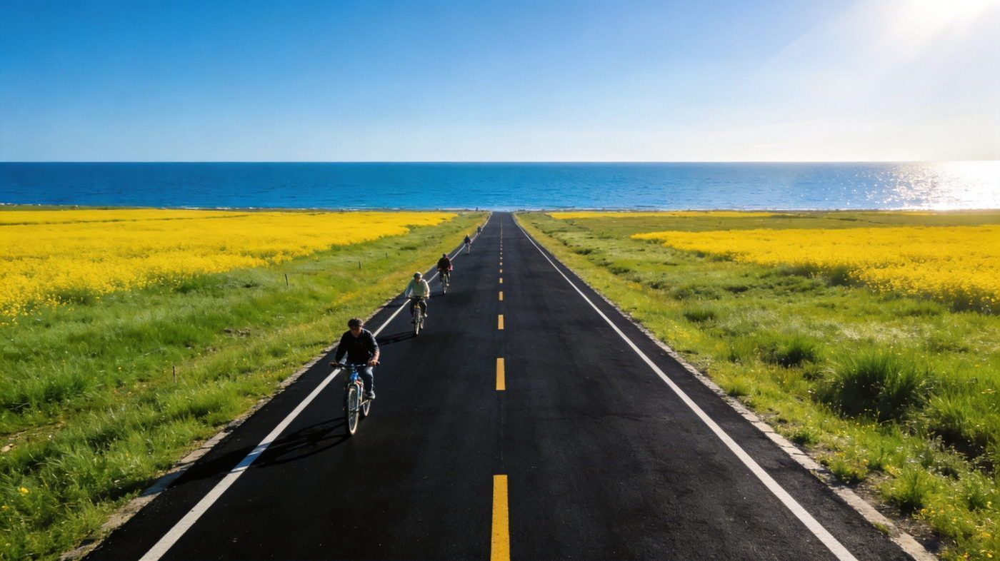
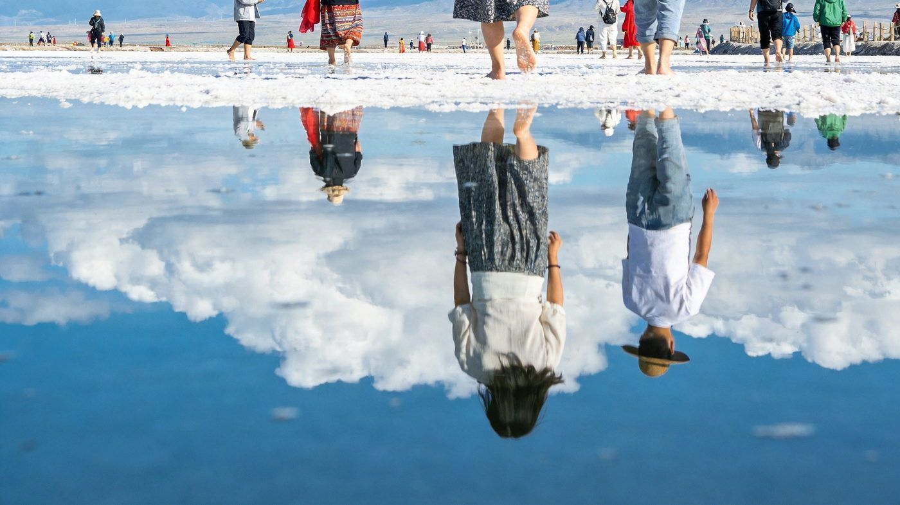
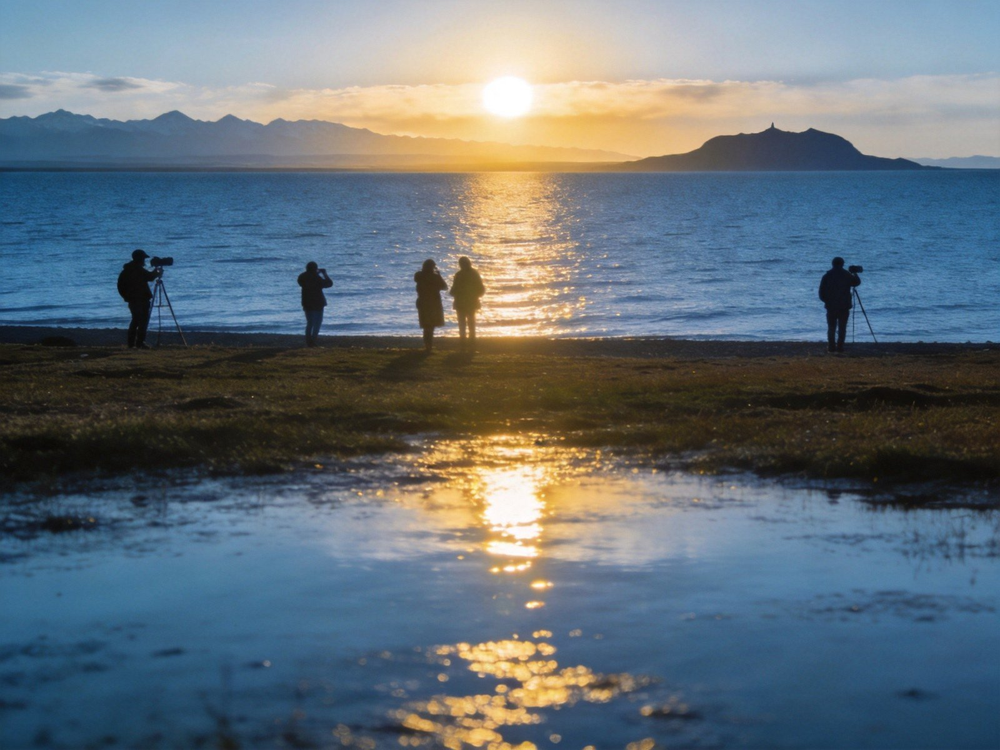

🌊 青海湖 · QINGHAI LAKE GUIDE
青海湖双版骑行观湖指南
中国最大内陆咸水湖，湖天一色 + 盛夏油菜花 + 环湖骑行 + 天空之镜。核心看点：二郎剑湖天一色、黑马河日出、环湖西路、茶卡盐湖天空之镜。求快走 2 天精华版，想深度走 3 天深度版。适合 1–3 人，含行程 / 住宿 / 美食 / 预算 / 出行方式对比。
📍 目的地：青海湖（青海）👥 1–3 人⏱️ 2 天 / 3 天双方案💰 人均预算已附
✨2 天精华 · 环湖西线
核心策略：D1 二郎剑看湖天一色 + 环湖西路，傍晚住黑马河；D2 黑马河日出 + 返程途中看油菜花，精华全部覆盖，节奏紧凑。
👥 1–3 人适配：青海湖环线约 360 公里、路况平整，2–3 人 自驾或包车最省时灵活；预算按 人均 标注。
🗺️ 行程安排
DAY 1 · 二郎剑湖天一色 + 环湖西路
🚗/🚌 西宁出发（约 2.5 小时）🌼 二郎剑景区（油菜花+湛蓝湖水同框）
🛣️ 环湖西路（免费最美湖岸线）🌅 黑马河看日落
💡 二郎剑旺季门票约 90 元/人，需提前在「青海湖旅游 / 智游青海湖」小程序实名预约、每日限流约 1.2 万人，旺季提前 3–7 天抢；驾车密切关注二郎剑、黑马河、环湖西路三大堵点，尽量 7:00 前出发。行前务必在西宁休整一晚适应约 2200 米海拔。
DAY 2 · 黑马河日出 + 返程
🌅 清晨 5:30–6:00 黑马河看日出🌸 环湖东路/门源油菜花拍照
🚗 下午 返程西宁
⚠️ 黑马河是公认最佳日出点，需早起并提前占位，清晨极冷务必穿防风外套羽绒服；观景在湖边迎风，注意保暖防高反，切忌剧烈跑跳。
🌊3 天深度 · 环湖 + 茶卡
在精华版基础上补茶卡盐湖「天空之镜」与环湖西线慢游，节奏更松、更适合出片与包车/自驾自由行。
👥 1–3 人适配：3 天更适合自驾/包车串联多景点；茶卡离青海湖约 150 公里、单程 1.5–2.5 小时，可当日往返。预算按 人均 标注。
🗺️ 行程安排
DAY 1 · 抵达 + 二郎剑湖天一色
🚗/🚌 西宁出发🌼 二郎剑景区（油菜花+湖泊同框）
🛣️ 环湖西路慢游🏨 宿黑马河镇
💡 二郎剑旺季约 90 元/人（淡季约 50 元），务必提前小程序预约；联票（二郎剑+仙女湾）更划算。傍晚黑马河看日落，湖面金光粼粼超好出片。
DAY 2 · 黑马河日出 + 茶卡盐湖
🌅 清晨黑马河日出🛣️ 翻越橡皮山（海拔约 3800 米）
🧂 茶卡盐湖·天空之镜（小火车入湖心）🏨 宿茶卡镇 或 返回青海湖沿线
💡 茶卡旺季（5–10 月）门票约 60 元，需提前 1–7 天实名分时预约、现场不售票，浙江籍免大门票、学生半价；小火车单程约 50 元。最佳拍摄为清晨 7–9 点与傍晚 17–19 点，正午光线刺眼倒影不清。橡皮山口注意高反。
DAY 3 · 环湖西路 / 圣泉湾 + 返程
🛣️ 沿环湖西路慢游（草原牛羊牧场）🌊 圣泉湾断崖（可触摸湖水，观光车约 40 元往返）
🚗 下午 返程西宁
⚠️ 环湖西路部分路段手机信号弱，提前下载离线地图；想骑行可在平缓路段租车（约 50 元/小时）体验一段。9 月后油菜花凋谢，以草原秋色为主、人少光好。
⭐特色景点 · 单独详览
把青海湖最有辨识度的 2 个点单独拎出来说清楚——值不值得去、怎么玩。

环湖公路 · 骑行与湖天一色
环湖骑行
环湖公路 · 一路向西的青海湖
环绕青海湖的柏油公路全程约 360 公里、路况平整，紧贴湖岸的环湖西路堪称最美的免费湖岸线：一边是湛蓝湖水，一边是草原牛羊，盛夏时金黄油菜花与湖天一色相映成趣。
👍 必去理由：核心必体验。自驾/骑行可随时停车拍照；想在公路骑行可用骑行道或平缓路段租车（约 50 元/小时）。7 月中下旬油菜花与门源花海同开，黄金窗口约 7 月 10 日–8 月 10 日。
配图：原创生成 · 无版权风险

茶卡盐湖 · 天空之镜
天空之镜
茶卡盐湖 · 水天一色倒影奇观
被誉为「天空之镜」的高原盐湖，天气晴好时平静水面如镜，倒映蓝天白云、雪山倒影，站在湖中宛如行走于云端，6–9 月丰水期镜面效果最佳。
👍 必去理由：必打卡。旺季门票约 60 元/人，需提前 1–7 天实名分时预约（现场不售票），小火车单程约 50 元；清晨 7–9 点与傍晚 17–19 点出片率最高，湖中行走请穿防水鞋套。
配图：原创生成 · 无版权风险

黑马河日出 · 湖光熔金
日出
黑马河日出 · 公认最佳观日点
青海湖公认的最佳日出观赏地，黎明前在湖边占位，看金色朝阳从湛蓝湖面缓缓升起、湖面与天光同辉，是此行最震撼的瞬间之一。
👍 必去理由：核心体验。清晨 5:30–6:00 占位，湖边风大极冷，务必羽绒服防风；观景在湖边迎风，注意保暖防高反、忌剧烈跑跳。
配图：原创生成 · 无版权风险
🚗怎么去：自驾 vs 包车 vs 跟团
青海湖环线友好，三种方式各有取舍。下面把三种方式讲透。
青海湖自驾/包车/跟团三种出行方式对比
| 维度 | 🚗 自驾 | 🚙 包车 | 🚌 跟团 |
|---|
| 核心体验 |
路线自由、追日出/日落灵活，环湖西路随时停车拍照，可顺路带飞如意（塔尔寺、原子城） |
司机熟悉路况与最佳机位，免去高原长时间驾驶，同样自由；适合新手与不熟高反的游客 |
行程固定、省心省力有讲解，青海湖+茶卡经典线都有，但节奏偏赶 |
|---|
| 适合有高原/长途驾驶经验、享受驾驶的游客 | 适合不想开车的 2–3 人团，可拼车分摊 | 适合带长辈小孩、图省心的游客 |
| ✔ 自由度最高、环湖最爽 | ✔ 免驾驶疲劳、可拼车分摊 | ✔ 全程安排、无需做攻略 |
| 费用参考 |
2–3 天租车+油费约 800–1500 元/车 | 包车约 500–800 元/天（含司机+油费） | 人均约 1000–2000 元起（青海湖+茶卡线） |
|---|
| ✔ 3 人拼车人均最省 | ✘ 人少时人均偏高 | ✘ 可能有自费/购物、节奏紧 |
| 💡 一句话建议：有经验且 2–3 人 → 自驾；不想开高原车想自由 → 包车；带老人小孩图省心 → 跟团。 |
|---|
👥 1–3 人怎么选：2–3 人自驾/包车最划算；单人可拼车/跟团。二郎剑需提前预约，茶卡盐湖同样要提前线上预约，别等到了门口才买票。
🏨住宿推荐
三档价位，均为 2 人房计（旺季价格翻倍请乘以 1.5–2 倍）。
经济型黑马河/二郎剑家庭客栈
淡季约 200–400 元/晚 · 人均 100–200
看日出首选黑马河镇，旺季热门前需提前 1 个月订。
中端舒适湖景民宿/中档酒店
约 300–600 元/晚 · 人均 150–300
临湖观景房，推窗见湖，方便次日看日出、不折返。
高端体验观湖度假酒店/星空房
约 600–1200 元/晚 · 人均 300–600
青海湖为绝美观星地，星空房/度假酒店适合度蜜月与出片。
🍖青海湖必吃清单
西北青藏高原风味，西宁莫家街与湖边镇子都能尝到。
💰预算对比（人均）
区间为保守–宽松（不含往返大交通），实际以淡旺季与选择为准。
青海湖2天精华与3天深度方案人均预算对比
| 项目 | 2天精华版 | 3天深度版 |
|---|
| 大交通（往返西宁） | 约 400–800 | 约 400–800 |
|---|
| 住宿 | 1 晚 100–200（旺季 200–400） | 2 晚 250–500（旺季 450–900） |
|---|
| 餐饮 | 约 200–350 | 约 300–500 |
|---|
| 门票+景交（二郎剑/茶卡火车等） | 约 100–200 | 约 250–400 |
|---|
| 交通/租车（人均分摊） | 约 200–400 | 约 350–600 |
|---|
| 合计 · 人均 | 约 1000–1600 | 约 1500–2400 |
|---|
💡 怎么省：二郎剑+仙女湾联票更划算；6 月或 9 月初错峰出行住宿省一半；浙江省对口支援、茶卡盐湖浙江籍凭身份证免大门票（以当年政策为准）。
🧭避坑 & 实用贴士
- 二郎剑/茶卡必须提前预约：两大景区旺季均全预约制、现场不售票，二郎剑限流约 1.2 万人、茶卡需提前 1–7 天实名分时预约，不约大概率白跑。
- 先适应高反：青海湖海拔约 3200 米，应先在西宁（约 2200 米）休整一晚；上湖避免洗澡、剧烈运动与跑跳，备葡萄糖和便携氧气瓶。
- 黑马河日出要早起占位：公认最佳日出点，清晨 5:30 起床、观景台提前半小时占位，湖边风大极冷，务必防风外套羽绒服。
- 温差大 + 紫外线强：昼夜温差可达 15℃以上、紫外线为平原 2–4 倍，洋葱式穿搭 + 防晒霜遮阳帽缺一不可。
- 别导航去鸟岛/沙岛、勿随意自驾进湿地：鸟岛沙岛已因生态保护永久关闭；湖区边缘湿地情况复杂，新手自驾选正规环湖公路。